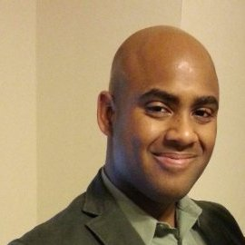

Frank R. Castillo

I'm willing to have my ideas demolished. Bring a proper wrecking ball.
I am a student, family man, US Marine, and programming enthusiast who follows and, when time allows, writes about politics, international relations, technology, economics, finance, and other topics of global relevance. I currently attend the University of South Florida where I'm completing math and programming pre-requisites towards an application to the university's PhD program in economics; I hope to submit my application by the end of 2017. Through my research, I hope to find ways to mitigate the risk of money laundering and fraud in developing economies. I hold an MBA from University of South Florida Saint Petersburg, as well as a BS in Political Science from University of Maryland University College. Professionally, I've held several positions as a contractor in the areas of Anti-Money Laundering, financial compliance, and information technology. I also served in the United States Marine Corps for nine years, concluding my service in 2013.
Blog
Tweets
Academics
Presentations: Big Data and E-Commerce, University of South Florida (02/2017 - 05/2017)